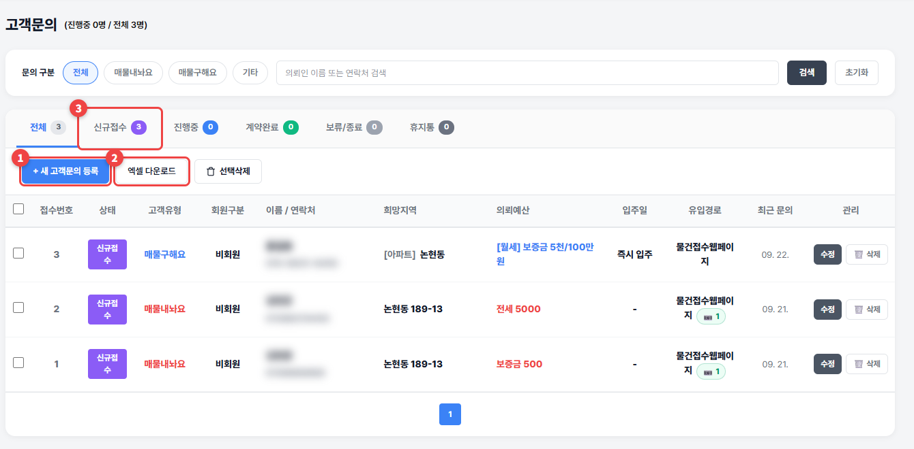

고객문의
물건접수웹페이지나 전화로 들어온 임대인·임차인 문의를 관리합니다.
1
① 전화로 받은 문의는 + 새 고객문의 등록으로 적어 두세요. ② 엑셀 다운로드로 목록을 받을 수 있습니다. ③ 위쪽 탭으로 신규접수 · 진행중 · 계약완료 · 보류/종료를 나눠 봅니다.

💡 알아두세요
- 물건접수웹페이지로 들어온 문의는 자동으로 쌓이고, 접수 사진도 함께 보입니다.
- 지운 문의는 휴지통 탭에서 ♻️ 복구할 수 있습니다.